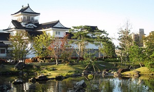

Destination
City Toyama
 Toyama City (富山) is the largest city and capital of Toyama Prefecture in the Hokuriku Region of northern Chubu. The city is a former castle town and is historically a center of medicine. Due to its position on the Hokuriku Shinkansen, Toyama is a popular stop for tourists on the way to other attractions in the area such as the Tateyama Kurobe Alpine Route.
The area of present-day Toyama city was part of ancient Etchū Province. The Toyama Plain is good farmland and historically it was a point of strategic and traffic importance since prehistoric times. During the Sengoku period, it was frequently a battlefield, coming under the control of warlord Sassa Narimasa, who built a castle town around Toyama Castle and channeled rivers to bringing about a flourishing agricultural industry. The area subsequently became part of Kaga Domain under the Maeda clan during the Edo period, during which time a positive industrial promotion policy was implemented on the production of Chinese medicine and washi (Japanese paper). Also, thanks to the improvement of kitamaebune sea transportation routes, these industries thrived and Toyama became known nationwide as the province of medicine.